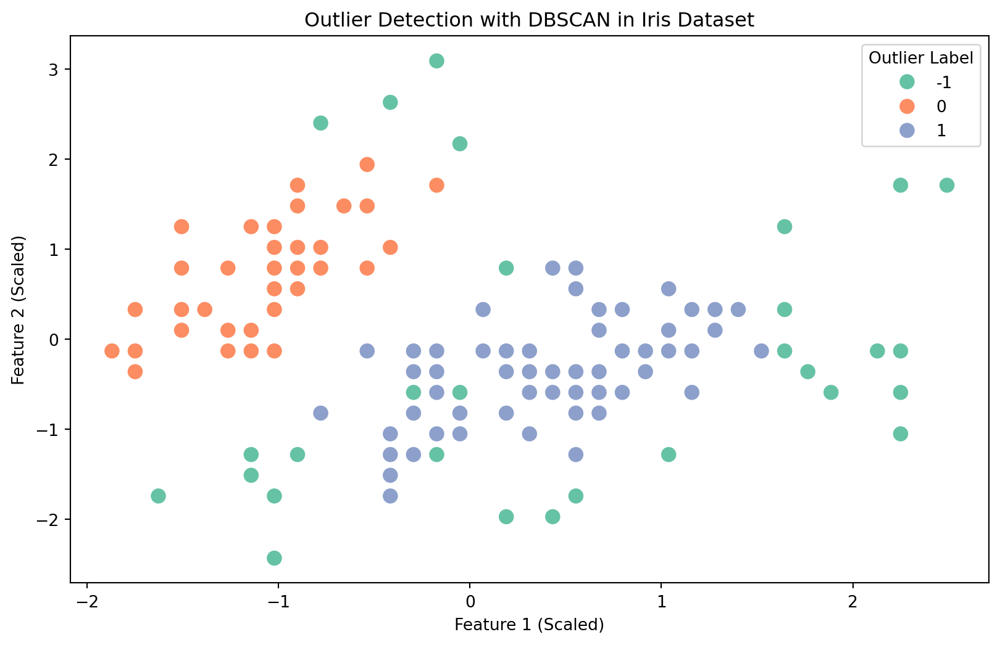
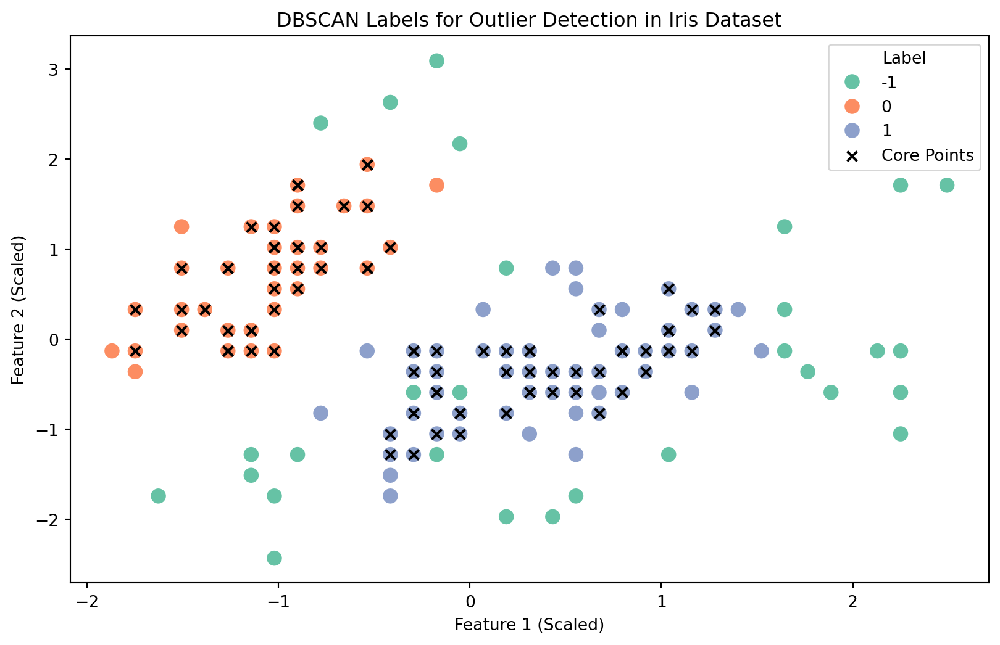
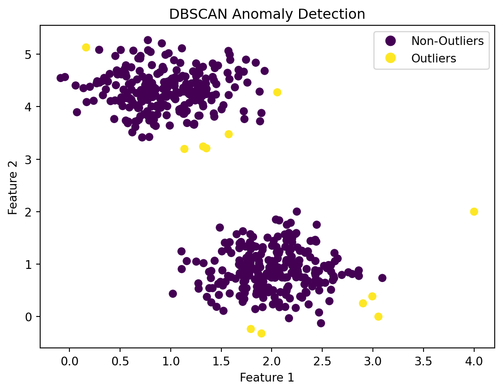

from sklearn.cluster import DBSCAN
from sklearn.preprocessing import StandardScaler
import matplotlib.pyplot as plt
import seaborn as sns
from sklearn.datasets import load_irisIntroduction to Anomaly Detection
I. Anomaly Detection
A. Brief Overview of Anomaly Detection
Anomaly detection is the process of identifying data points that deviate from the normal behavior of a dataset. These deviations are often referred to as anomalies or outliers. Anomaly detection is crucial in various fields such as fraud detection, fault detection, and quality control, where identifying unusual patterns is of great importance.
B. Importance of Detecting Outliers in Datasets
Detecting outliers is essential for maintaining the integrity of data analysis and machine learning models. Outliers can significantly impact statistical measures and the performance of predictive models, leading to inaccurate results and skewed insights.
C. Common Applications of Anomaly Detection in Various Industries
- Cybersecurity:
- Intrusion Detection: Identifying unusual patterns in network traffic or system logs to detect potential cyber attacks or security breaches.
- Fraud Detection: Detecting anomalous transactions or activities that may indicate fraudulent behavior in online transactions or financial systems.
- Finance:
- Credit Card Fraud Detection: Identifying unusual spending patterns or transactions that may indicate fraudulent use of credit cards.
- Algorithmic Trading: Detecting anomalies in financial market data to identify potential trading opportunities or risks.
- Healthcare:
- Disease Outbreak Detection: Monitoring health data to identify unusual patterns that may indicate the outbreak of diseases or public health emergencies.
- Patient Monitoring: Detecting abnormal physiological parameters in real-time for early identification of health issues.
- Manufacturing:
- Quality Control: Identifying defective products or anomalies in the manufacturing process by monitoring sensor data and production metrics.
- Predictive Maintenance: Detecting unusual equipment behavior to predict and prevent equipment failures before they occur.
II. Significance of Detecting Outliers in Data
A. Impact of Outliers on Data Analysis and Model Performance
Outliers can significantly distort statistical measures and machine learning model performance. Let’s demonstrate this impact using a simple example with the Iris dataset.
B. Challenges Posed by Outliers in Real-World Datasets
Outliers pose challenges such as increased variance, skewed model training, and reduced interpretability. Let’s consider a scenario where outliers affect the performance of a machine learning model.
III. DBSCAN as an Outlier Detection Method
A. Introduction to DBSCAN (Density-Based Spatial Clustering of Applications with Noise)
DBSCAN is a density-based clustering algorithm that can also be utilized for detecting outliers. It works by defining clusters as dense regions separated by sparser areas. The key idea is that a cluster is a dense area of data points separated by areas of lower point density.
B. Key Concepts: Core Points, Border Points, and Noise
- Core Points:
- Core points are data points that have a sufficient number of neighboring points within a specified distance (eps).
- These points are at the heart of a dense region.
- Border Points:
- Border points are on the edge of a dense region but do not have enough neighbors to be considered core points.
- They are part of the cluster but not as central.
- Noise:
- Noise points are data points that do not belong to any cluster.
- They are typically isolated points.
C. Advantages of DBSCAN for Anomaly Detection
- Robust to Density Variations:
- DBSCAN can handle clusters of different shapes and sizes, making it robust to variations in point density.
- Doesn’t Require Pre-specification of Clusters:
- Unlike some other algorithms, DBSCAN does not require specifying the number of clusters beforehand.
- Handles Outliers Naturally:
- DBSCAN naturally identifies outliers as noise points, making it suitable for anomaly detection.
D. Limitations and Considerations when Using DBSCAN
- Sensitive to Distance Metric and Parameters:
- The choice of distance metric and parameters like epsilon (eps) and minimum points (min_samples) can impact the results.
- Difficulty with Varying Density:
- DBSCAN may struggle with datasets containing clusters of varying densities.
Now, let’s demonstrate the application of DBSCAN for outlier detection using the Iris dataset.
IV. Implementing DBSCAN for Anomaly Detection
For this example, let’s use the Iris dataset available in scikit-learn. We’ll load the dataset and scale the features for better performance.
Code Example:
# Load the Iris dataset
iris = load_iris()
data = iris.data# Scale the data for better performance
data_scaled = StandardScaler().fit_transform(data)C. Configuring DBSCAN Parameters for Effective Outlier Detection
Configuring DBSCAN involves setting two main parameters: - eps: The maximum distance between two samples for one to be considered as in the neighborhood of the other. - min_samples: The number of samples (or total weight) in a neighborhood for a point to be considered as a core point.
Code Example:
# Apply DBSCAN for outlier detection
dbscan = DBSCAN(eps=0.6, min_samples=8)D. Applying DBSCAN to Identify Anomalies in the Dataset
Apply the configured DBSCAN model to identify anomalies in the dataset. Outliers will be labeled as -1 in the result.
Code Example:
outliers_dbscan = dbscan.fit_predict(data_scaled)
# Print the number of outliers identified
num_outliers = sum(outliers_dbscan == -1)
print(f'Number of outliers detected: {num_outliers}')Number of outliers detected: 32Now, let’s visualize the results using a scatter plot. ##### Code Example:
# Visualize the results using a scatter plot
plt.figure(figsize=(10, 6))
sns.scatterplot(x=data_scaled[:, 0], y=data_scaled[:, 1], hue=outliers_dbscan, palette='Set2', s=100)
plt.title('Outlier Detection with DBSCAN in Iris Dataset')
plt.xlabel('Feature 1 (Scaled)')
plt.ylabel('Feature 2 (Scaled)')
plt.legend(title='Outlier Label', loc='upper right')
plt.show()
In this example, DBSCAN is applied to the Iris dataset to detect outliers. The resulting scatter plot visualizes the clustering of points, with outliers labeled accordingly. Adjust the eps and min_samples parameters based on your dataset characteristics.
V. Interpretation of DBSCAN Labels for Outliers
A. Understanding DBSCAN Labels: Core Points, Border Points, and Noise
In DBSCAN, the fit_predict method assigns labels to each data point. The labels can be: - -1: Noise points (outliers) - 0, 1, 2, ...: Cluster labels - core_sample_indices_: Indices of core points
B. Differentiating Between Normal and Anomalous Data Points
Normal data points typically belong to a cluster and are labeled with a non-negative integer. Anomalous data points (outliers) are labeled with -1.
Code Example:
# Assume dbscan is a fitted DBSCAN model
# Access the labels assigned by DBSCAN
labels = dbscan.labels_
# Identify core points
core_points_indices = dbscan.core_sample_indices_
core_points = data_scaled[core_points_indices]
# Visualize normal and anomalous points
plt.figure(figsize=(10, 6))
sns.scatterplot(x=data_scaled[:, 0], y=data_scaled[:, 1], hue=labels, palette='Set2', s=100)
plt.scatter(core_points[:, 0], core_points[:, 1], marker='x', color='black', label='Core Points')
plt.title('DBSCAN Labels for Outlier Detection in Iris Dataset')
plt.xlabel('Feature 1 (Scaled)')
plt.ylabel('Feature 2 (Scaled)')
plt.legend(title='Label', loc='upper right')
plt.show()
In this example, core points are marked with ‘x’ in the scatter plot, helping to differentiate them from other data points.
C. Strategies for Interpreting and Analyzing DBSCAN Results
- Density of Clusters:
- Observe the density of clusters. Denser regions often contain core points, while sparser areas may have border points.
- Isolation of Noise Points:
- Examine the isolation of noise points. Outliers are often located in regions with low point density.
- Optimal Parameter Selection:
- Experiment with different values of
epsandmin_samplesto find the optimal parameters for your dataset.
- Experiment with different values of
VI. Conclusion
Anomaly detection is a powerful tool for uncovering hidden patterns and irregularities in your data, leading to more informed decision-making. Whether you are working with financial data, sensor readings, or any other type of dataset, the principles discussed in this blog post can be applied to enhance your data analysis journey.
Summary of Key Takeaways from the Blog Post
- Introduction to Anomaly Detection:
- Understanding the significance of detecting outliers in datasets.
- DBSCAN as an Outlier Detection Method:
- Leveraging the density-based clustering approach of DBSCAN for effective anomaly detection.
- Interpretation of DBSCAN Labels:
- Understanding the meaning of DBSCAN labels and differentiating between core points, border points, and noise.
import numpy as np
import matplotlib.pyplot as plt
from sklearn.cluster import DBSCAN
from sklearn.datasets import make_blobs
# Generate sample data
data, labels = make_blobs(n_samples=500, centers=2, cluster_std=0.40, random_state=0)
outliers = np.array([[4, 2]])
# Add outliers to the data
data = np.concatenate([data, outliers], axis=0)
# Apply DBSCAN
dbscan = DBSCAN(eps=0.3, min_samples=5)
clusters = dbscan.fit_predict(data)
# Label outliers as True (1) and non-outliers as False (0)
outlier_labels = (clusters == -1)
# Visualize the results
scatter = plt.scatter(data[:, 0], data[:, 1], c=outlier_labels, cmap='viridis')
plt.title('DBSCAN Anomaly Detection')
plt.xlabel('Feature 1')
plt.ylabel('Feature 2')
# Create a legend with specified colors
legend_labels = ['Non-Outliers', 'Outliers']
legend_handles = [plt.Line2D([0], [0], marker='o', color='w', markerfacecolor=scatter.cmap(0.0), markersize=10),
plt.Line2D([0], [0], marker='o', color='w', markerfacecolor=scatter.cmap(1.0), markersize=10)]
plt.legend(legend_handles, legend_labels)
plt.show()